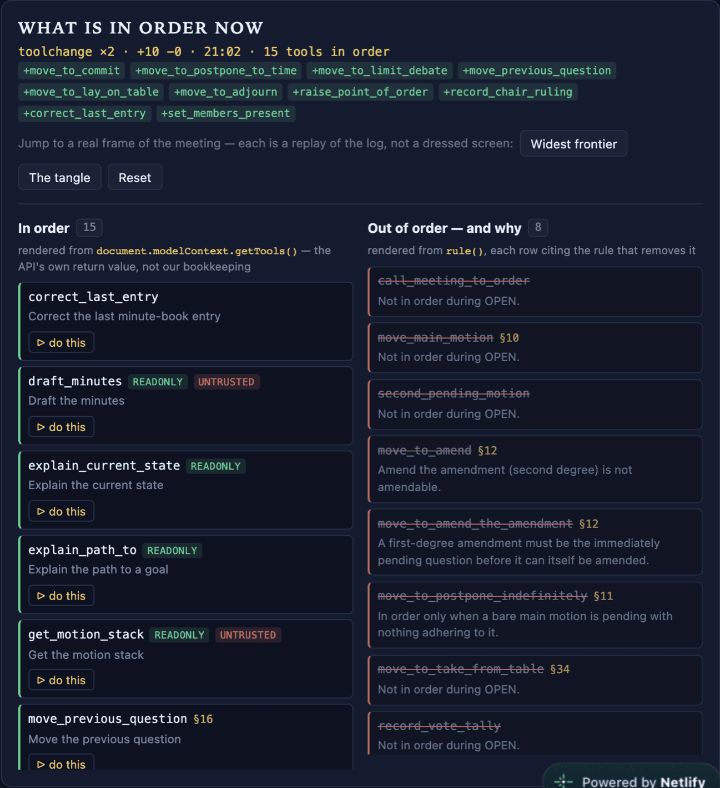

The tool is not greyed out. It is gone.
Three motions deep — a main motion, an amendment, and an amendment to that amendment —
move_to_amend_the_amendment is no longer registered: a first-degree amendment
must be the immediately pending question before it can itself be amended, and the immediately
pending question here is already a second-degree one. §12
move_to_amend is gone for the mirror-image reason on the same rule — a
second-degree amendment is not itself amendable, because there is no third degree. Both
absences print their reason on screen, in the words the rule table carries.
The left column is getTools(): 15 names. The right column is
rule(): 8 names, each with the rule that removes it — a
section number where the rule has one, the phase where it does not. The agent sees the first
list. The human reads the second.
Neither can drift from the other, because both are computed from one predicate over one data file — and the left one is not our bookkeeping at all, it is what the API handed back.

move_to_amend_the_amendment is
gone. Not refused — absent. §12 is printed beside it.